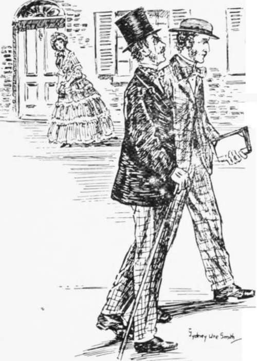
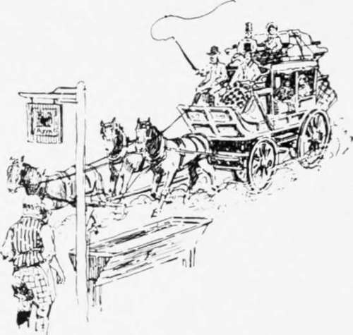
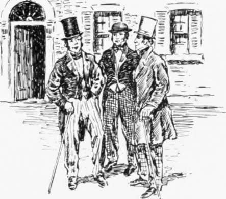
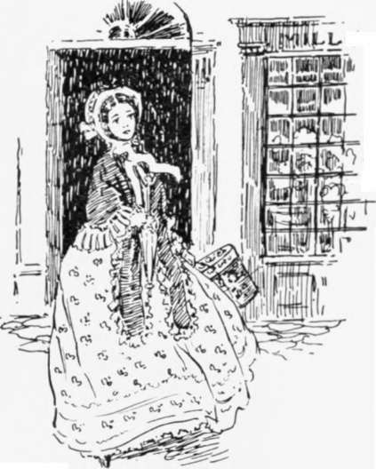
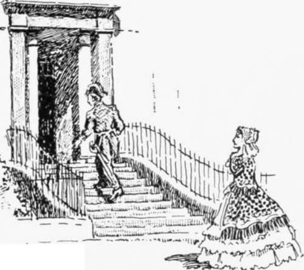
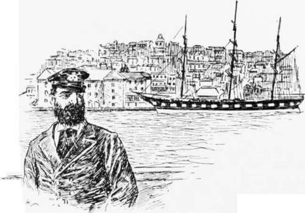

Fifty Years Ago
Description
This section is from the book "Stories Of Old Sydney", by Charles H. Bertie.
Fifty Years Ago
HIS address is No. 2 Cave, Domain. Hours: 6 to 8 p.m. in winter, 8 p.m. to 1 a.m. in summer. May be consulted 011 any subject under the sun, from the comparative warmth of the Sydney newspapers as bedclothes to the fallacies of pragmatism. He is jolly enough to be twenty, has a voice a hundred years old, and confesses to eighty. My tobacco is of a brand he fancies. I am in a position, therefore, to give you some of his old Sydney stories.
I was a young man of twenty when the ship Marion dropped her anchor in Sydney Cove. That was in the year 1852. I was alone; had just left Oxford, but was bent on seeking fortune in the new El Dorado. I did not know when I landed where to go, so I asked the boatman, a wiry a n d wrinkled old salt, who was rowing me in his wherry from the ship to the landing place, if he could tell me a good boarding house.
I walked out to look at the city.
" If it's lodgings you want, I'm the chap as can plant you on out-and-outers. Don't go by no means to put up at a pub., for the landlords and landladies '11 think yer allers a-robbing on 'em 'cept yer allers as drunk as a fiddler. And don't go to none on 'em 'ere cribs vere 'em calls it 4 Board and Residence'; them's the worsest places for prog in the town. But I'll take yer to a first-rate place in Kent Street; altho' it's nothing much to look at, it's a rattling place for grub! It's kept by an old 'ooman named O'Callaghan, wot keeps cows, and pigs, goats, chickens, and other domestic reptiles. I'll take yer and introduce yer to the old 'ooman. Yer'll find her rough and ready." After leaving the Circular Quay, the waterman took me along George Street, down Druitt Street, and round into Kent Street, till we came to a house perched upon the rocks, just at the rear of the Town Hall.
The Mail Coach.
A Matter of Business.
In the window was a card, and on it was inscribed something like this:-
Bord han Loggin here for singil ginthiltnin han their wives han childer, if so be they've got hany.
-Judith O'Callaghan. The boatman introduced me to Mrs. O'Callaghan, a big, powerful Irishwoman with a face brimming with good humour, and she promised to look after me as if I were " her own blessed born son."
The day after my arrival, I walked out to look at the city. I glanced over a wall coming up Druitt Street, and found we had a cemetery next to our back yard. That's where the Town Hall is now. Passing along George Street I was surprised to see the fine jewellers' shops, quite up to Bond Street, and in Pitt Street the drapers' shops. In George Street I saw a big man with a clean-shaven, rather rough face, wearing a white waistcoat, ordering some men round who were rolling casks into a wine and spirit store. I was struck with his appearance, and asked who he was. The man replied: "Oh, that's Bill Longf." I came afterwards to know him well, but as the Hon. William Long-. At the corner of Market Street the Coopers had a big store with a line of posts and chains in front of it. Of course the streets were not like they are now. Mud was much in evidence, and ruts were frequent. This was not to be wondered at. as teams of bullocks were constantly passing along.
Down in Lower George Street I saw an amusing sight. A cab rank was there; the old four-wheelers principally, with two horses, with a few of " Mr. Hansom's cabs," as they were called. I was standing by this rank when a small boy came up and said to a cabby named Bill Rroughton, " Father wants yon," to which Bill replied, " Then want will be his master." Off ran the boy into a hotel, and presently out came an exceedingly fat man. weighing about 30 stone, who made for the rank. Immediately Bill saw him he whipped up his horses and _ drove away followed by all the other cabs.
The fat man was Mr. James Ewen, the licensee of the hotel, and when he saw the cabs disappear he waxed very wroth. After a time the cabs came back, but out came Mr. Ewen, and away drove the cabs. This occurred three times, and each time Mr. Ewen was hotter, and "wrother," and redder. Finally he shook his fist at them and disappeared. I saw in the papers afterwards that he summoned Bill Brough-ton and obtained a verdict of one shilling against him, despite the fact that a gentleman named McCarthy swore that he had engaged Bill to take him to a funeral-but Mr. Dowling, the magistrate, said he ought to have explained this fact to Mr. Ewen.
A Matter of Dress.
Circular Quay was a very different place then from what it is now. The water and mud extended up a part of what is now Pitt Street, joining on to the very dirty Tank Stream. Wharves were on both sides, but the vessels did not lie close up to them as at present. The ship was moored some distance off, and two heavy timbers were run from her to the wharf. The space between was boarded over, and up this gangway the wool was hauled, not with a windlass, but with a capstan and all hands going.
A Matter of State.
Circular Quay.
Then there were bullock teams everywhere. The drivers were known by their pipes and language. The pipe was a "cutty" of any shape and size favoured by the owner. Some were nigger's heads, others were Russians or Turks, or mermaids. or Margaret Catchpole. The blacker-looking the pipe, the prouder was the owner. As to their language -well, here's a story :-
There was a good man who was horrified at the bullock drivers' vocabulary. He said to them: "Why don't you try kindness? the bullocks do not understand that brutal language. Try kindness." They removed their cutties, and told him to try it. So one day the good man demonstrated. A team was handed oxer to him and he started the bullocks. They proceeded along the Quay until a slight hill was met. Here the driver had to use his voice for the first time. " Come up. Strawberry; forward. Blossom," he said. With one accord the bullocks stopped, turned their heads and looked him up and down in a ruminating- way; then the leaders started, described a semicircle, and the team calmly returned to its guffawing owner.
Continue to:
- prev: A Mysterious Affair. An Episode Of The Thirties. Continued
- Table of Contents
- next: Fifty Years Ago. Continued